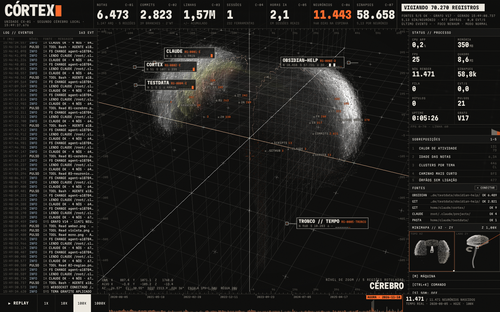
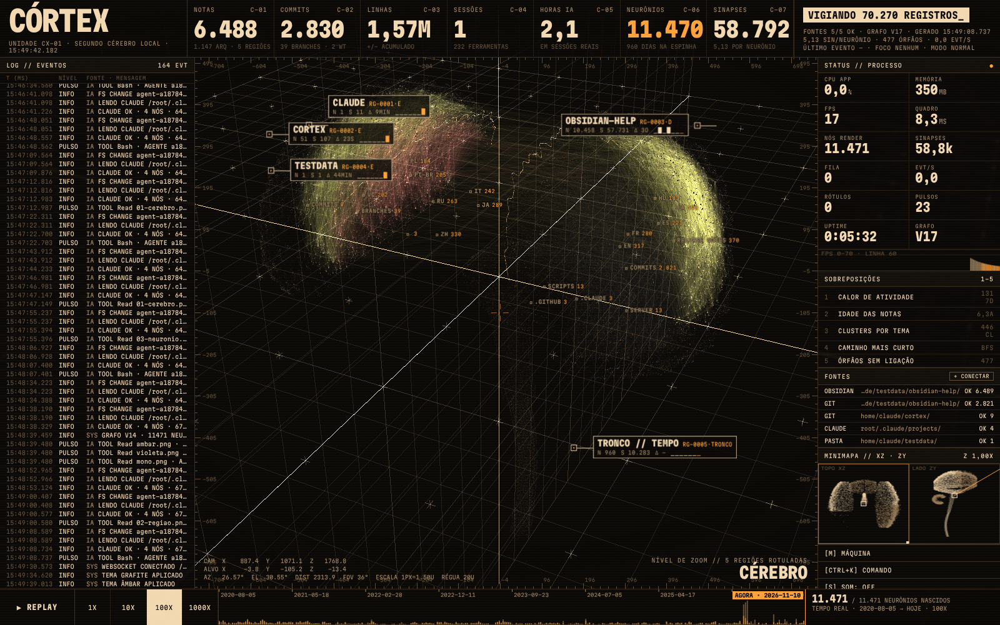
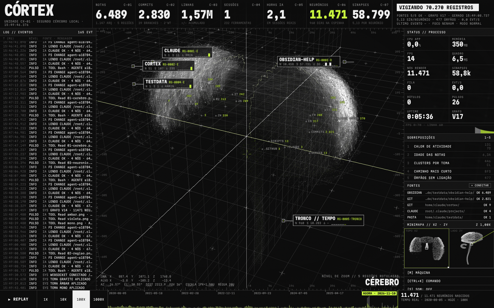
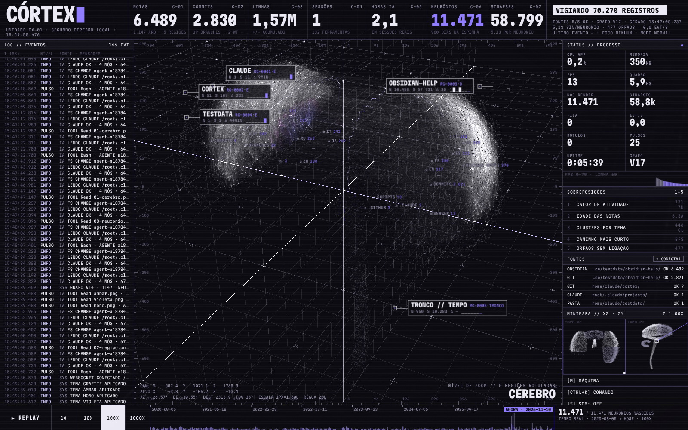

Um acento só, quente e raro, faz o app parecer uma máquina industrial, não um neon.
As massas em osso e cinza mantêm milhares de pontos legíveis sem estourar o brilho.
O azul-aço frio separa o que é da IA sem gritar.